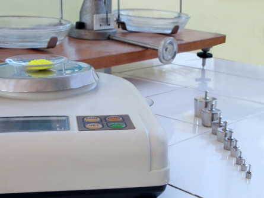

©Radu Razvan/shutterstock
Unit D is dedicated to a study of chemical equilibrium. In Module 7 you will investigate the principles of chemical equilibrium. In Module 8 you will expand upon these principles as you investigate the equilibrium of acid-base systems.
Throughout Unit D you will rely on your skills as an observer, and you will develop skills to predict changes that may occur to equilibrium systems. As you have done in other units in this course, you will also rely on your knowledge of diagnostic tests to check your predictions and to confirm you understanding of principles affecting chemical equilibrium.
You will learn to describe and analyze equilibrium systems from a range of perspectives. In addition to qualitative descriptions, you will describe equilibrium systems from a quantitative perspective.
In Module 7 you will use ICE tables and the equilibrium constant, Kc, to describe an equilibrium from a quantitative perspective. You will further apply this understanding in Module 8 using the equilibrium constants for acids and bases, Ka and Kb.
At the end of Unit D you will be able to
The Module 8 Assessment will also serve as your Unit D Assessment. In the Assessment, you will investigate the principles involved in the design and structure of the Table of Relative Strengths of Acids and Bases, which you will use extensively throughout Module 8.